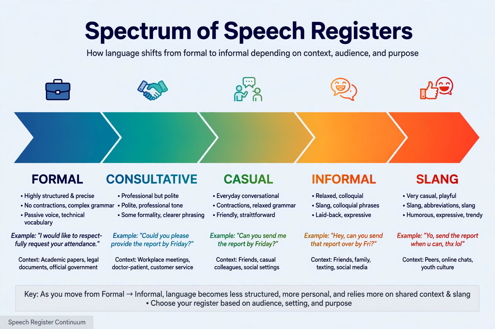

| Register | |
|---|---|
| Field | Sociolinguistics, stylistics |
| Governed by | Field, tenor, mode (Halliday) |
| Scale | From frozen/formal to intimate |
In sociolinguistics, a register is a variety of language used for a particular purpose or in a particular social setting. The same speaker commands many registers — the legal language of a contract, the shorthand of a medical handover, the relaxed slang of friends — and shifts between them according to context. Whereas a dialect varies with who the speaker is, register varies with what the speaker is doing.

M. A. K. Halliday analysed register through three variables: field (the subject matter and activity), tenor (the relationship between participants), and mode (the channel — spoken, written, signed). Together these predict the linguistic choices appropriate to a situation. Martin Joos earlier proposed five levels of formality: frozen, formal, consultative, casual and intimate.
Specialised professional registers — legal English with its archaisms and Latin tags, aviation English, medical terminology — sacrifice accessibility for precision and solidarity within the group. Deliberate register-mixing, such as a politician using vernacular in a set-piece speech, is a powerful rhetorical device.
Dialect · Jargon · Diglossia · Code-switching